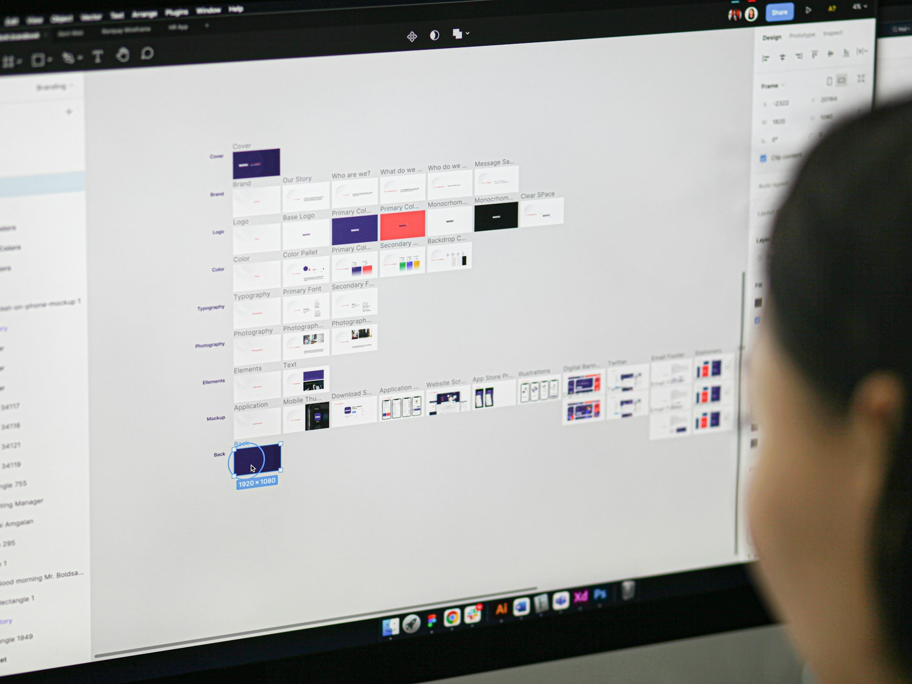

TL;DR
Budget tools often overlook critical insights. Identify better AI options like Supermetrics for actionable data and adaptability.
The Risks of Budget AI Analytics for Digital Marketers
Digital marketers with budgets under $500 a month often find themselves in a bind. The allure of free or low-cost AI analytics tools is strong but misleading. These tools can waste critical time and resources without delivering actionable insights.
For a marketer targeting a small online business or startup, choosing inadequate tools can jeopardize campaign success and customer engagement. When every decision counts, the wrong analytics tool could mean the difference between growth and stagnation.
Why the Default Approach with Low-Cost Tools Fails

Many digital marketers rely on budget-friendly AI analytics tools, only to find themselves hitting roadblocks. These tools often provide surface-level insights, such as basic website traffic stats or social media engagement, which fall short when trying to identify nuanced trends or customer behaviors.
For instance, analyzing consumer sentiment across multiple channels might require a 10% increase in tool cost for richer data and more sophisticated algorithms.
Moreover, setting up these tools can take 10-20 hours, demanding unforeseen technical skills, like API integrations, which most marketers lack. The sparse, inadequate training materials exacerbate this issue, making it difficult to leverage the tool's full capabilities.
Consider a small business owner who adopts a low-cost solution, expecting quick insights. Instead, they spend 15 hours troubleshooting and still fail to gather actionable data, leading to missed trends and strategic missteps.
Common advice to "just learn as you go" proves futile; without comprehensive guides or support, many marketers get trapped in a cycle of trial and error. In reality, the cost-saving attempt can translate into lost time and untapped opportunities—underestimating the value of investing upfront in robust analytical solutions.
The Best AI Analytics Options for Tight Budgets
Not all budget tools are equal. Here, we've ranked some options that provide real value under $100/month, addressing both cost and capability.
| Feature | Google Analytics 360 | Supermetrics | Matomo |
|---|---|---|---|
| Pricing | $75/month | $99/month | $59/month |
| Setup Complexity | Moderate | High | Low |
| Data Insights | Advanced | Comprehensive | Basic |
| User Support | Limited | Robust | Average |
| Customization | Good | Excellent | Limited |
Each tool has its strengths. Google Analytics 360 offers deep insights, but with limited direct support. Supermetrics provides comprehensive insights and robust support but is complex to set up. Matomo is cost-effective with easy setup but has limited advanced features. For most marketers, Supermetrics offers the best blend of insights and support.
Scenario: Navigating Tool Selection Under Pressure
Imagine a marketer, Alex, at a small e-commerce company with a $200 monthly analytics budget. Alex needs to choose a tool within a week to boost their next product launch.
Day 1-2: Alex lists all tool options under $100/month. Google Analytics 360 and Supermetrics are shortlisted.
Day 3: Alex tests free trials, finding Google Analytics too generic for precise customer insights needed.
Day 4-5: Evaluation focuses on feature comparison and user feedback. Supermetrics stands out for its integrations and depth.
Day 6: A decision is made. Alex opts for Supermetrics, recognizing the initial setup time but valuing long-term benefits.
Outcome: The product launch sees an uptick in conversions, and Alex's decision leads to a 20% increase in customer retention over three months. A careful yet speedy choice that prioritized depth and adaptability over sheer cost.
Where Budget Tools Often Fail: Mistakes and Misjudgments
Where Budget Tools Often Fail: Mistakes and Misjudgments
Budget analytics tools can frequently lead marketers astray due to overlooked complexities. Many expect plug-and-play solutions, not considering that effective implementation often requires 20+ hours of training.
This underestimation can stall critical campaigns. Misaligned metrics, such as focusing on likes over conversion rates, can lead to strategies that boost superficial engagement without real ROI.
For example, a team might increase page likes by 30% without realizing conversions dipped by 10%, wasting weeks to realign goals.
Poor user support compounds these issues; a lack of timely assistance forces teams to muddle through technical glitches during peak campaign moments. Consider an agency launching a flash sale, relying on automated data. If their tool crashes and support is unavailable, they face a delay costing thousands in missed sales.
Selecting tools based on cost alone is a false economy. One-size-fits-all solutions often falter under the pressure of large-scale datasets. A tool might perform well with 10,000 data points but crumble with 100,000, causing entire campaign strategies to misfire.
Rather than assuming cheaper is better, marketers should assess if the slight savings justify potentially debilitating functional limitations. Don't accept the common advice that budget tools suffice universally; it’s a dangerous oversimplification.
Prioritize tools that meet your specific needs even if it means a higher initial investment.
Next Steps: Action Plan for Smart Tool Selection
In the next 7 days, implement this actionable plan to avoid common analytics tool pitfalls:
- Evaluate Budget & Needs: Determine the precise budget and specific features needed. Avoid tools lacking essential capabilities.
- Test Top Choices: Within your budget constraints, trial at least two tools, focusing on integration and data depth.
- Assess Setup Requirements: Identify potential setup hurdles and time investments before committing.
Ensure you can allocate the setup time within 72 hours.
- Seek Real User Feedback: Find recent user reviews to gauge tool reliability and community support.
- Finalize Selection by Day 7: Make a decisive choice.
Approve the tool aligning with your strategy, rolling it out swiftly. By acting decisively, you minimize risk and set your campaigns on the right track, saving both money and time in the long run.
Avoid analysis paralysis; better to choose and adapt than endlessly ponder.
FAQ
What are the key factors to consider when choosing AI analytics tools on a budget?
Focus on features that align with your needs, setup time, user feedback, and integration capability within your budget.
When should I move from a free AI analytics tool to a paid option?
Upgrade when the free tool limits your insights or when better integration is needed for scaling campaigns.
Who is this actually a good fit for?
This is best for readers who need a clear recommendation and can tolerate some tradeoffs.
Empower marketers with sharp insights for AI tool selection on a budget.
Next step
Use the article as a decision point, not just reading material. Your next system matters more than more browsing.
Search more articles
Find related tools, workflows, and guides.
Photo credits
- Photo 1: Sincerely Media via Unsplash
- Photo 2: Budka Damdinsuren via Unsplash
- Photo 3: Alvaro Reyes via Unsplash
- Photo 4: Maxim Ilyahov via Unsplash
- Photo 5: Mailchimp via Unsplash